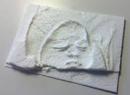
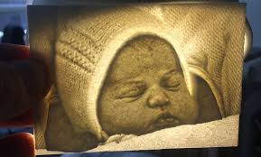

¿Que es la Litofanía?
 La litofanía consiste básicamente en la proyección de una luz (antiguamente, de una vela, pero también de luz solar) a través de una lámina semitransparente en la que se ha modelado un volumen. El cambio de grosor hace que al trasluz varíe la opacidad de cada parte de tal manera que las zonas más oscuras de la imagen original están resueltas con mayor grosor de lámina y las más claras con menor grosor. El resultando es que al pasar una luz a través de la lámina de litofanía vemos la imagen en claroscuro. Wikipedia/Litofanía
Un poco de Historia
| Material | Época |
|---|---|
| Cera cubirta en porcelana | Siglos XVII al XIX |
| Poliamida | Contemporáneo |
| Pla | Actualmente se puede hacer por Impresión 3D |